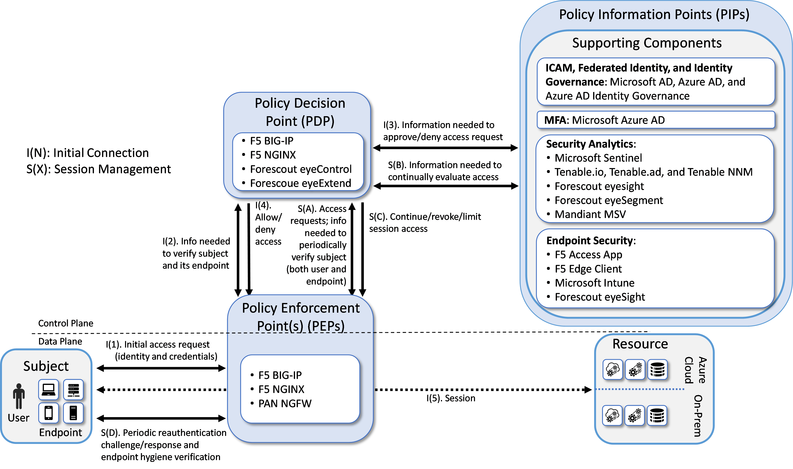
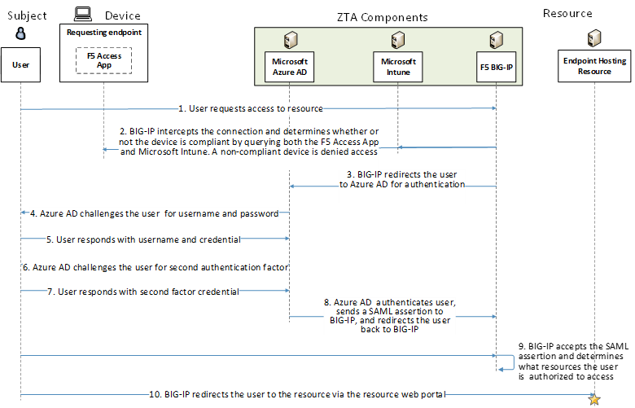
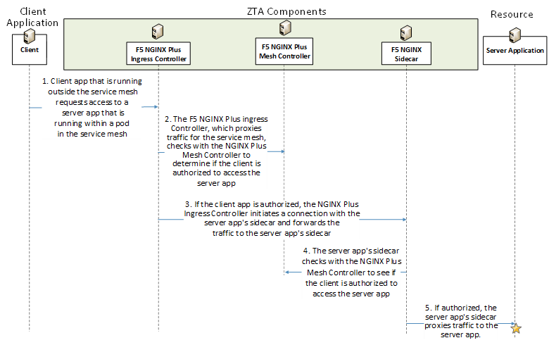
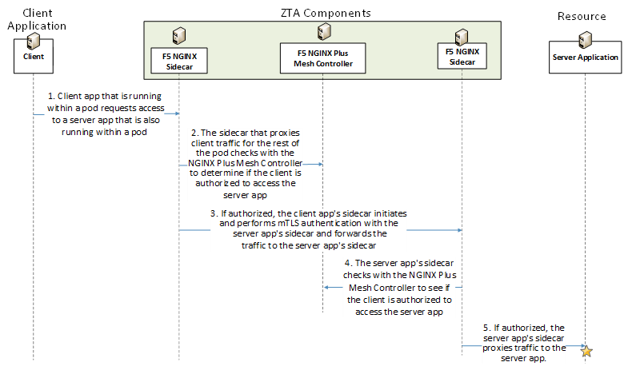

Enterprise 3 Build 4 (E3B4) - SDP - F5 BIG-IP, F5 NGINX Plus, Forescout eyeControl, and Forescout eyeExtend as PEs#
Note
This page is supplementary material for the NIST SP 1800-35 publication.
Technologies#
E3B4 uses products from F5, Forescout, Mandiant, Microsoft, Palo Alto Networks, and Tenable. Certificates from DigiCert are also used. For more information on these collaborators and the products and technologies that they contributed to this project overall, see Collaborators and Their Contributions.
E3B4 components consist of F5 BIG-IP, F5 NGINX Plus, F5 Access App, F5 Edge Client, Microsoft AD, Microsoft Azure AD, Microsoft Azure AD Identity Governance, Microsoft Intune, Microsoft Sentinel, Tenable.io, Tenable.ad, Tenable NNM, Mandiant Security Validation, Forescout eyeControl, Forescout eyeExtend, Forescout eyeSight, Forescout eyeSegment, Microsoft Azure (IaaS), and DigiCert CertCentral. (Note that after this build was completed, the name Azure AD was changed to Entra ID. This appendix uses the original name of Microsoft Azure AD.)
Table 1 lists all of the technologies used in Build E3B4. It lists the products used to instantiate each ZTA component and the security function that each component provides.
Table 1 - E3B4 Products and Technologies
Component |
Product |
Function |
|---|---|---|
PE |
F5 BIG-IP, F5 NGINX Plus, Forescout eyeControl, Forescout eyeExtend |
Decides whether to grant, deny, or revoke access to a resource based on enterprise policy, information from supporting components, and a trust algorithm. |
PA |
F5 BIG-IP, F5 NGINX Plus, Forescout eyeControl, Forescout eyeExtend |
Executes the PE’s policy decision by sending commands to a PEP that establishes and shuts down the communication path between subject and resource. |
PEP |
F5 BIG-IP, F5 NGINX Plus, PAN NGFW |
Guards the trust zone that hosts one or more enterprise resources; establishes, monitors, and terminates the connection between subject and resource as directed by the PA; forwards requests to and receives commands from the PA. |
ICAM - Identity Management |
Microsoft AD and Azure AD |
Creates and manages enterprise user and device accounts, identity records, role information, and access attributes that form the basis of access decisions within an organization to ensure the correct subjects have the appropriate access to the correct resources at the appropriate time. |
ICAM - Access & Credential Management |
Microsoft AD and Azure AD |
Manages access to resources by performing user and device authentication (e.g., SSO and MFA) and using identity, role, and access attributes to determine which access requests are authorized. |
ICAM - Federated Identity |
Microsoft AD and Azure AD |
Aggregates and correlates all attributes relating to an identity or object that is being authorized by a ZTA. It enables users of one domain to securely access data or systems of another domain seamlessly, and without the need for completely redundant user administration. Federated identity encompasses the traditional ICAM data, supports identities that may be part of a larger federated ICAM community, and may include non-enterprise employees. |
ICAM - Identity Governance |
Microsoft AD and Azure AD Identity Governance |
Provides policy-based, centralized, automated processes to manage user identity and access control functions (e.g., ensuring segregation of duties, role management, logging, access reviews, analytics, reporting) to ensure compliance with requirements and regulations. |
ICAM - MFA |
Azure AD (Multi-Factor Authentication) |
Authenticates user identity by requiring the user to provide not only something they know (e.g., a password), but also something they have (e.g., a token). |
Endpoint Security - UEM/MDM |
Microsoft Intune |
Manages and secures enterprise desktop computers, laptops, and/or mobile devices in accordance with enterprise policy to protect applications and data; ensure device compliance; mitigate and remediate vulnerabilities and threats; monitor for suspicious activity to prevent and detect intrusions; prevent, detect, and disable malware and other malicious or unauthorized traffic; repair infected files when possible; provide alerts and recommend remediation actions; and encrypt data. Pushes enterprise applications and updates to devices, enables users to download enterprise applications that they are authorized to access, remotely deletes all applications and data from devices if needed, tracks user activity on devices, and detects and addresses security issues on the device. |
Endpoint Security - EPP |
Forescout eyeSight |
Detects and stops threats to endpoints through an integrated suite of endpoint protection technologies including antivirus, data encryption, intrusion prevention, EDR, and DLP. May include mechanisms that are designed to protect applications and data; ensure device compliance with policies regarding hardware, firmware, software, and configuration; monitor endpoints for vulnerabilities, suspicious activity, intrusion, infection, and malware; block unauthorized traffic; disable malware and repair infections; manage and administer software and updates; monitor behavior and critical data; and enable endpoints to be tracked, troubleshooted, and wiped, if necessary. |
Endpoint Security - EPP |
F5 Access App (mobile) |
Provides some capabilities normally associated with an EPP but does not support full compliance. |
Endpoint Security - EPP |
F5 Edge Client (desktop) |
Provides some capabilities normally associated with an EPP but does not support full compliance. |
Security Analytics - SIEM |
Microsoft Sentinel |
Collects and consolidates security information and security event data from many sources; correlates and analyzes the data to help detect anomalies and recognize potential threats and vulnerabilities; and logs the data to adhere to data compliance requirements. |
Security Analytics - SOAR |
Microsoft Sentinel |
Integrates the SIEM and other security tools into a single pane of glass to support generation of insights into threats and help track, manage, and resolve cybersecurity incidents. Executes predefined incident response workflows to automatically analyze information and orchestrate the operations required to respond. |
Security Analytics - Endpoint Monitoring |
Tenable.io and Forescout eyeSight |
Discovers all IP-connected endpoints and performs continuous collection, examination, and analysis of software versions, configurations, and other information regarding hosts (devices or VMs) that are connected to the network. |
Security Analytics - Vulnerability Scanning and Assessment |
Tenable.io and Tenable.ad |
Scans and assesses the enterprise infrastructure and resources for security risks; identifies vulnerabilities and misconfigurations; and provides remediation guidance regarding investigating and prioritizing responses to incidents. |
Security Analytics - Traffic Inspection |
Forescout eyeSight and Tenable NNM |
Intercepts, examines, and records relevant traffic transmitted on the network. |
Security Analytics - Network Discovery |
Forescout eyeSight and Tenable NNM |
Discovers, classifies, and assesses the risk posed by devices and users on the network. |
Security Analytics - Validation of Control |
Forescout eyeSegment |
Validates the controls implemented through visibility into network traffic and transaction flows. |
Security Analytics - Security Validation |
Mandiant Security Validation |
Provides visibility and evidence on the status of the security controls’ effectiveness in the ZTA. Enables security capabilities of the enterprise to be monitored and verified by continuously validating and measuring the cybersecurity controls; also used to automate the demonstrations that were performed to showcase ZTA capabilities. Mandiant Security Validation is deployed throughout the project’s laboratory environment to enable monitoring and verification of various security aspects of the builds. VMs that are intended to operate as actors are deployed on each of the subnetworks in each of the enterprises. These actors can be used to initiate various actions for the purpose of verifying that security controls are working to support the objectives of zero trust. |
General - Remote Connectivity |
F5 BIG-IP, PAN NGFW |
If F5 is used as a PE and PEP, then F5 BIG-IP provides remote users’ connectivity to on-premises resources. To support remote users’ connectivity to resources in IaaS, F5 BIG-IP can be used to reach on-premises, and then the IPsec tunnel can be used to connect from on-premises to IaaS. If Forescout is used as a PE and PEP, then Palo Alto Networks NGFW can be used to provide remote users’ connectivity to on-premises resources. To support remote users’ connectivity to resources in IaaS, Palo Alto Networks NGFW can be used to reach on-premises, and then the IPsec tunnel can be used to connect from on-premises to IaaS. |
General - Certificate Management |
DigiCert CertCentral TLS Manager |
Provides automated capabilities to issue, install, inspect, revoke, renew, and otherwise manage TLS certificates. |
General - Cloud IaaS |
Azure - GitLab |
Provides computing resources, complemented by storage and networking capabilities, hosted by a cloud service provider, offered to customers on demand, and exposed through a GUI and an API. |
General - Cloud SaaS |
DigiCert CertCentral, Microsoft Azure AD, Microsoft Identity Governance, Microsoft Intune, Tenable.io |
Cloud-based software delivered for use by the enterprise. |
General - Application |
GitLab |
Example enterprise resource to be protected. (In this build, GitLab is integrated directly with Azure AD using SAML, and Microsoft Sentinel pulls logs from GitLab.) |
General - Enterprise-Managed Device |
Windows client, macOS client, and mobile devices (iOS and Android) |
Example endpoints to be protected. (In this build, all enterprise-managed devices are enrolled into Microsoft Intune.) |
General - BYOD |
Windows client, macOS client, and mobile devices (iOS and Android) |
Example endpoints to be protected. |
Build Architecture#
In this section we present the logical architecture of E3B4. We also describe E3B4’s physical architecture and present message flow diagrams for some of its processes.
Logical Architecture#
Figure 1 depicts the logical architecture of E3B4. Figure 1 uses numbered arrows to depict the general flow of messages needed for a subject to request access to a resource and have that access request evaluated based on subject identity (both requesting user and requesting endpoint identity), authorizations, and requesting endpoint health. It also depicts the flow of messages supporting periodic reauthentication of the requesting user and the requesting endpoint and periodic verification of requesting endpoint health, all of which must be performed to continually reevaluate access. The labeled steps in Figure 1 have the same meanings as they do in Architecture - Figure 1. However, Figure 1 includes the specific products that instantiate the architecture of E3B4. Figure 1 also does not depict any of the resource management steps found in Architecture - Figure 1 because the ZTA technologies deployed in E3B4 do not support the ability to perform authentication and reauthentication of the resource or periodic verification of resource health.
E3B4 was designed with F5 BIG-IP, F5 NGINX Plus, Forescout eyeControl, and Forescout eyeExtend as its PEs and PAs. F5 BIG-IP, F5 NGINX Plus, and PAN NGFW serve as PEPs, and Microsoft AD and Azure AD provide ICAM support. To manage service-to-service access for containers, NGINX Plus enforces access to microservices. A more detailed depiction of the messages that flow among components to support user access requests can be found in Message Flows for Successful Resource Access Requests.
Figure 1 - Logical Architecture of E3B4

Physical Architecture#
Enterprise 3 describes the physical architecture of the E3B4 network.
Message Flows for a Successful Resource Access Request#
This section depicts high-level message flows for E3B4. Resource access is protected by F5 technology such as BIG-IP and NGINX Plus, which act as PDPs and PEPs. Microsoft Azure AD serves as the identity provider for the build, and Microsoft Intune and F5 Access App support endpoint protection by providing device compliance information to the F5 PDP.
Authentication Message Flow for Access to an Enterprise Resource (F5 BIG-IP, Microsoft Azure AD, Microsoft Intune, and F5 Access App)#
Figure 2 depicts the high-level message flow supporting the use case in which a subject who has an enterprise ID, is using a compliant device, and is authorized to access an enterprise resource, requests and receives access to that resource. In the case depicted here, access to the resource is authenticated and authorized by F5 BIG-IP, which acts as both PDP and PEP. All endpoints are enrolled into Microsoft Intune, which is an MDM (and a UEM) that can configure and manage devices and can also retrieve and report on device security settings that can be used to determine compliance, such as whether the device is running a firewall or anti-malware. Non-Windows devices have the F5 Access App installed on them as an MDM agent to enable them to report compliance information to Microsoft Intune, but Windows devices do not require a separate agent because Windows has built-in agents that are designed to communicate with Intune. Intune-enrolled devices check in with Intune periodically, allowing Intune to authenticate the requesting endpoint, determine how the endpoint is configured, modify certain configurations, and collect much of the information it needs to determine whether the endpoint is compliant. The F5 Access App provides unique device details to BIG-IP that enables BIG-IP to query Intune for device compliance. In addition, the F5 Access App also provides its own compliance information about each device to BIG-IP. F5 BIG-IP will not permit a device to access any resources unless it is compliant.
Figure 2 - Use Case E3B4 - User Authentication and Access Enforcement Using F5 BIG-IP, Microsoft Intune, F5 Access App, and Microsoft Azure AD

The message flow depicted in Figure 2 consists of the following steps:
A user requests access to a resource.
F5 BIG-IP intercepts this request and determines whether or not the requesting endpoint is compliant by querying both the F5 Access App and Microsoft Intune. If the requesting end-point is not compliant, its access will be blocked with an “Access Denied” message.
Assuming the device is compliant, BIG-IP redirects the user to Azure AD for authentication.
Azure AD Access challenges the user for their username and password.
The user responds with username and password.
Azure AD challenges the user for their second authentication factor.
The user responds with their second-factor credential.
Azure AD authenticates the user, sends a SAML assertion to BIG-IP, which serves as both a policy engine and a policy enforcement point protecting the resource, and redirects the user back to BIG-IP.
BIG-IP accepts the SAML assertion and determines what resources the user is authorized to access.
BIG-IP redirects the user to the resource via the resource web portal.
Authentication Message Flow for a Client Application Running Outside the Service Mesh to Access an Enterprise Server Application Running within a Pod in the Service Mesh (F5 NGINX)#
Figure 3 depicts the high-level message flow supporting the use case in which a client application that is running outside the service mesh and is authorized to access a server application that is running within a pod in the service mesh, requests and receives access to that server application. In the case depicted here, access to the resource is authenticated and authorized by NGINX Plus, which includes NGINX Mesh Controller acting as PDP and NGINX Ingress Controller and a sidecar container acting as PEPs.
Figure 3 - Use Case E3B4 - Client Authentication and Access Enforcement for Inter-Service Mesh Communication Using F5 NGINX Plus

The message flow depicted in Figure 3 consists of the following steps:
A client application that is running outside the service mesh requests access to a server appli-cation that is running within a pod in the service mesh.
The NGINX Plus Ingress Controller, which proxies traffic for the service mesh, checks with the NGINX Plus Mesh Controller to determine if the client application is authorized to access the server application.
Assuming the client app is authorized, the NGINX Plus Ingress Controller initiates a mutual connection with the server application’s sidecar and forwards the traffic to the server applica-tion’s sidecar.
The server application’s sidecar checks with the NGINX Plus Mesh Controller to determine if the client app is authorized to access the server application.
Assuming the client is authorized, the server application’s sidecar proxies traffic to the server application.
Authentication Message Flow for a Client Application Running Within a Pod to Access an Enterprise Server Application Also Running within a Pod in the Service Mesh (F5 NGINX)#
Figure 4 depicts the high-level message flow supporting the use case in which a client application that is running within a pod in the service mesh and is authorized to access a server application that is also running within a pod in the service mesh, requests and receives access to that server application. In the case depicted here, access to the resource is authenticated and authorized by NGINX Plus, which includes NGINX Mesh Controller acting as PDP and sidecar containers that proxy traffic for the client and server applications acting as PEPs.
Figure 4 - Use Case-E3B4 - Client Authentication and Access Enforcement for Intra-Service Mesh Communication Using F5 NGINX Plus

The message flow depicted in Figure 4 consists of the following steps:
A client application that is running within a pod in the service mesh requests access to a server application that is also running within a pod in the service mesh.
The sidecar that proxies client traffic for the rest of the pod checks with the NGINX Plus Mesh Controller to determine if the client is authorized to access the server application.
Assuming the client app is authorized, the client application’s sidecar initiates and performs mTLS authentication with the server application’s sidecar and forwards traffic to the server ap-plication’s sidecar.
The server application’s sidecar checks with the NGINX Plus Mesh Controller to determine if the client is authorized to access the server application.
Assuming the client is authorized, the server application’s sidecar proxies traffic to the server application.